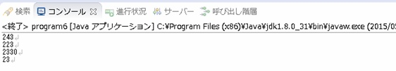
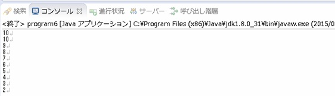

[Java スタディ - 9] 関数 (メソッド、Function)
こんにちは。明月です。
関数とはプログラムで実行する最小単位ということです。今まで、私が変数と制御文などを紹介する時に「public static void main」という関数から始まりました。
基本的にプログラムでクラスを関係しずに、「main」関数を探して呼びれますね。「main」関数のロジックを実行します。でも、全てのプログラム処理を「main」関数に入れれば、すごく複雑になります。
そのことは数学の関数と同じ意味で計算単位として分けることができます。
例えば「f(x) = x + 1」の数学の関数がある時、我々は「f(1) = 2, f(2) = 3, f(3) = 4」で一つの数学正義公式みたいに使いますね。プログラムの関数も同じいみです。
[アクセスタイプ] [リターンタイプ] メソード名 (パラメータ) {
...
return リターンタイプ;
}
上でアクセスタイプに関して後で別途で勉強します。
リターンタイプはデータタイプの意味です。例えば、関数を呼び出してリターンタイプを「int」型にするか「String」タイプにするかを決めることですね。
一つの例で確認します。
public class Example {
public static void main(String... args) {
int ret = 233;
int ret2 = 10;
// 加算
int ret3 = add(ret, ret2);
System.out.println(ret3);
// 減算
ret3 = sub(ret, ret2);
System.out.println(ret3);
// 乗算
ret3 = multi(ret, ret2);
System.out.println(ret3);
// 割算
ret = divi(ret, ret2)
System.out.println(ret3);
}
// 加算関数
public static int add(int a, int b) {
return a + b;
}
// 減算関数
public static int sub(int a, int b) {
return a - b;
}
// 乗算関数
public static int multi(int a, int b) {
return a * b;
}
// 割算
public static int divi(int a, int b) {
return a / b;
}
}

結果は加算の場合は「233 + 10」になるから「243」になりますね。減算の場合、「223」になるし、乗算、割算もそれぞれの結果がでました。
上の例みたいに関数は計算単位で処理を分けますね。
関数で「static」のキーワードがありますが、それは「main」関数が「static」タイプなので呼ばれる関数も「static」になります。「static」に関しては後で詳しく勉強します。
上の例では「main」から「add」などの関数を呼び出して結果をもらって処理します。
そうすると関数の中で自身を呼び出したらどうふうになるか？それを「再帰的呼出」と言います。簡単に「再帰」とよく言いますね。
public class Example1 {
public static void main(String... args){
reflect(1);
}
//재귀적 함수호출
public static void reflect(int a){
if(a < 10){
a++;
//reflect(2)
//reflect(3)
//...
reflect(a);
}
System.out.println(a);
}
}

上の例は「main」から「reflect」関数を呼び出します。でも「reflect」関数の中ではまた「reflect」 関数を呼び出しています。
数学の形では「f(x) = f(x + 1)」の状況で条件は「x < 10」の場合になります。
結局「System.out.println」で届くのは「f(10)」からなので「10、10、...」になりますね。「10」が２つになることは「reflect(9)」と「reflect(10)」が同じ値を出力しますね。